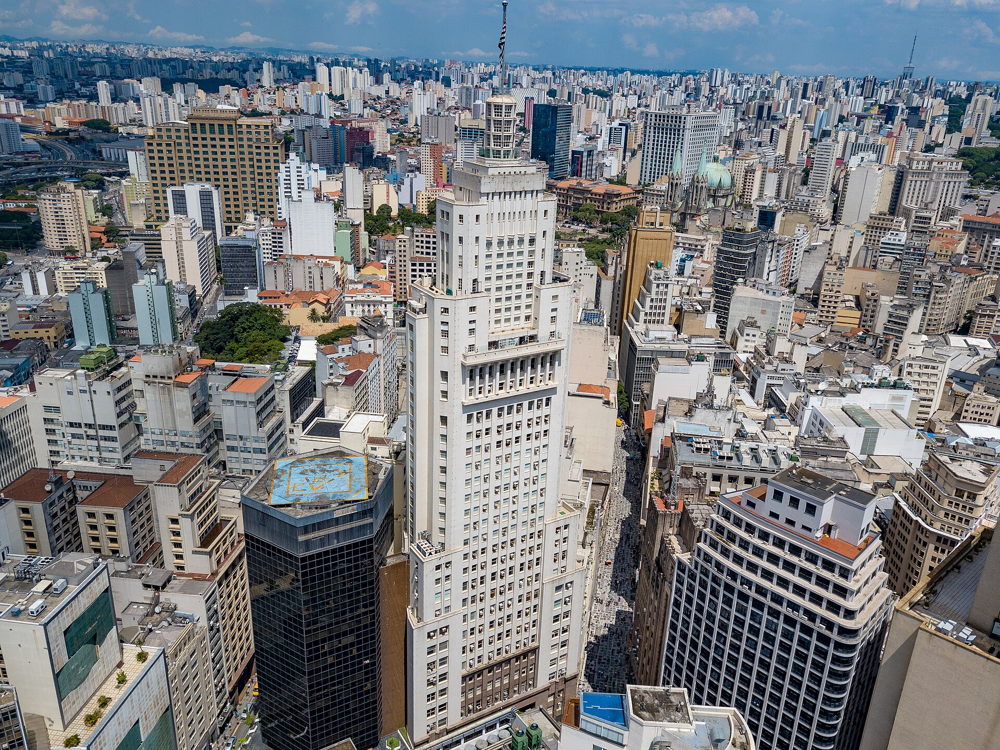
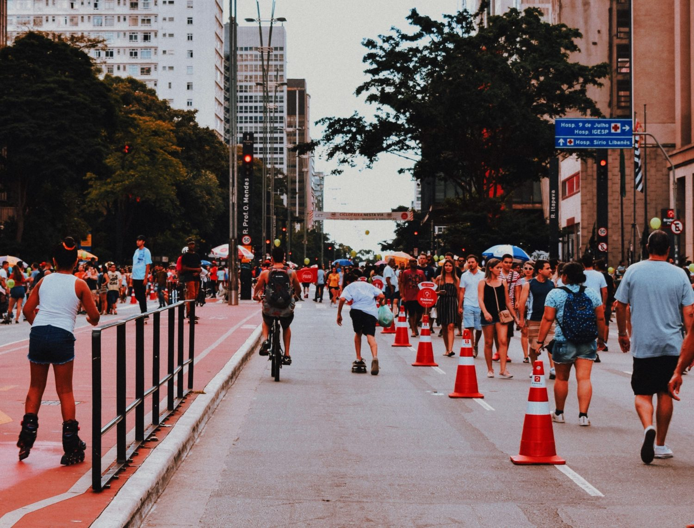
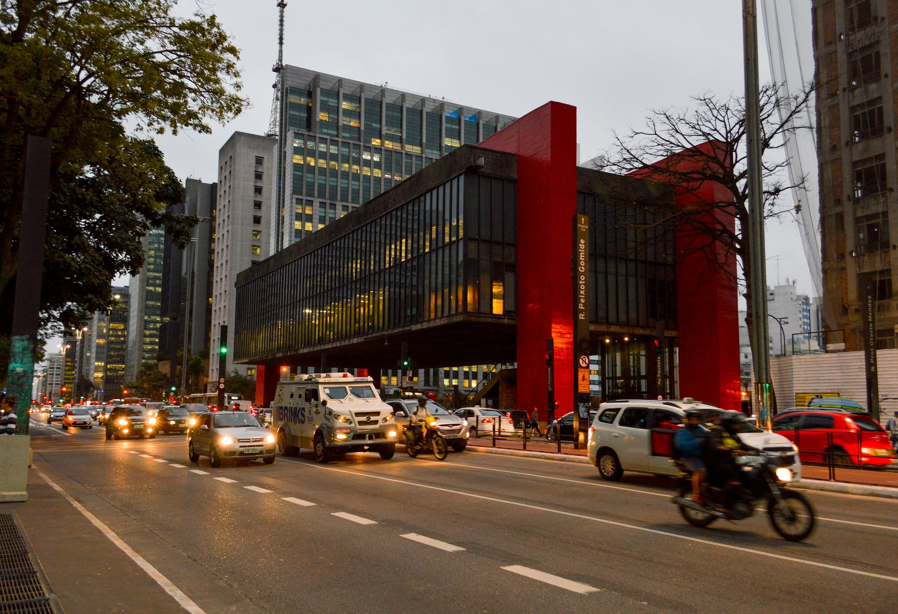
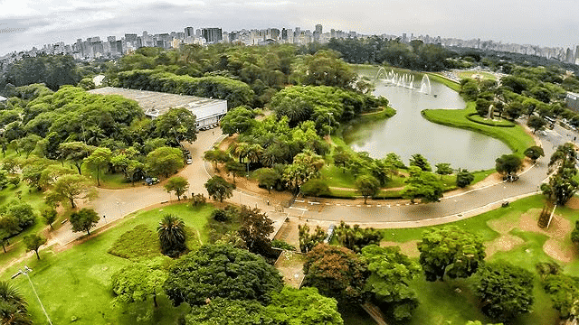

Conheca Sao Paulo
Descubra 3 destinos imperdiveis em Sao Paulo
São Paulo é a maior cidade do país e da América do Sul e também o maior destino turístico do Brasil. Se você é um dos 15 milhões de visitantes que conhecem a cidade todos os anos, pode anotar os pontos turísticos de SP que você precisa conhecer. A capital paulista possui uma infinidade de atrações e lugares incríveis para você conhecer, fazer compras, descansar, se divertir ou paquerar. Listamos alguns dos principais.
-

- 1. Avenida Paulista
A Avenida Paulista é um grande orgulho para os paulistanos. A via mais famosa da cidade é imponente e representa toda a diversidade e a efervescência urbana da capital.Com edifícios modernos, teatros, parques, casarões antigos, cinemas, museus, atrações culturais e de compras, a Paulista conta com diversas opções de passeios interessantes. É um dos principais pontos turísticos de SP.
Entre as atrações estão o Parque Trianon, que conta com vegetação nativa remanescente da Mata Atlântica, e a Casa das Rosas, um casarão no estilo clássico com programação cultural diversa.
A Paulista ganhou recentemente uma ciclovia em seu canteiro central, que percorre todos os 2,8 quilômetros de extensão da via. Aos domingos, a Avenida Paulista fica fechada para o trânsito e se transforma em um enorme parque e espaço cultural, com shows, feiras de artesanato e espaço para práticas esportivas. - 2. MASP
Localizado na Avenida Paulista, o Museu de Artes de São Paulo (MASP) merece um destaque à parte.
O museu impressiona tanto por seu projeto arquitetônico único, com um gigantesco vão livre, como pelo acervo permanente e as constantes exposições de artistas renomados mundialmente.
O MASP conta com o mais importante acervo de arte europeia do Hemisfério Sul.
Sua coleção reúne mais de 10 mil obras, incluindo pinturas, esculturas, fotografias, vídeos, peças de vestuário e objetos de diversos períodos históricos, abrangendo também artefatos das Américas, África e Ásia.
Além do calendário de exposições, o museu também oferece cursos, seminários, palestras, oficinas e workshops relacionados ao mundo da arte. - 3. Parque Ibirapuera
Certamente você já ouviu falar do Parque Ibirapuera, um dos cartões postais da cidade de São Paulo.
Repleto de espaços culturais e de lazer, o parque recebe diariamente milhares de visitantes.
Com sua vasta área verde, o Ibirapuera é ideal para um passeio ao ar livre, para prática de atividades físicas, como corridas ou passeios de bicicleta, ou simplesmente para relaxar e apreciar a natureza.
Dedique um dia inteiro para visitar e conhecer todas as atrações do Ibirapuera. Elas vão desde a ciclovia que percorre quase todo o parque, até o Planetário, o Museu de Arte Moderna, o Museu de Arte Contemporânea, o Viveiro de Mudas, entre tantas outras. Outra vantagem do parque é que há muitos hotéis perto do Parque Ibirapuera espalhados pela região, facilitando o turismo para quem vem à viagem. Os hotéis em Moema SP, por exemplo, são ótimas opções bem localizadas em relação ao Ibirapuera.


São Paulo é um grande centro de entretenimento urbano, repleto de cinemas, teatros, centros culturais, parques, museus, casas noturnas, restaurantes de todos os tipos.
Sem falar nas compras, com dezenas de shoppings e ruas de comércio popular especializado
A capital econômica do país pode não parecer o mais evidente destino turístico. Mas oferece opções diversas de atrativos urbanos: Como a Avenida Paulista e o centro, uma verdadeira selva de pedra.